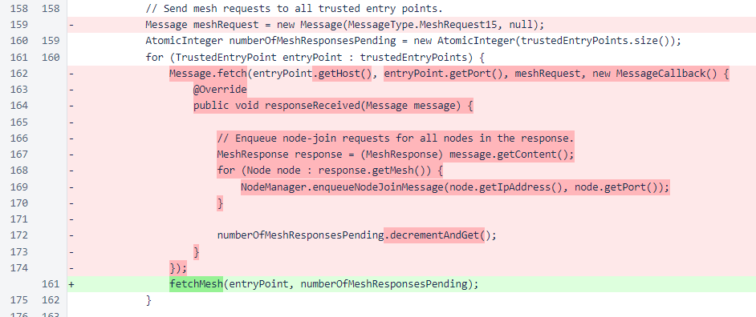
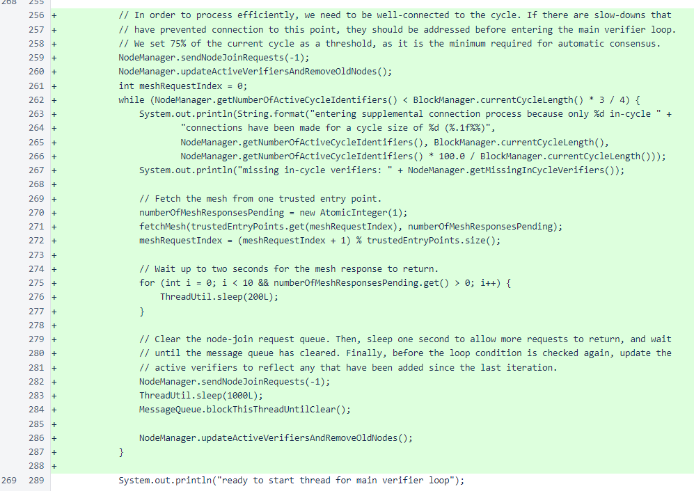

Nyzo version 487 (commit on GitHub) ensures sufficient mesh connectivity before starting the verifier loop.
This version does not affect the sentinel. It only modifies the verifier initialization process.
In version 484, the process for sending node-join messages was revised to reduce peak network traffic. While the overall effect of this change was positive, it also resulted in some verifiers taking a long time to establish sufficiently dense connections for proper operation. This update ensures that the main verifier loop does not start until a verifier has connections to at least 75% of the mesh.
In the Verifier class, the process for fetching the mesh from a trusted entry point has been refactored into a method so it could be reused later without duplicating code.
Just before starting of the main verifier loop, logic has been added to ensure that the mesh is densely connected. The node-join queue is cleared, and the NodeManager.updateActiveVerifiersAndRemoveOldNodes() method is called to determine to how many in-cycle verifiers this verifier is currently connected. As long as this verifier is not connected to at least 75% of in-cycle verifiers, a process queries one trusted entry point for the mesh and attempts to connect to all nodes in the response.
